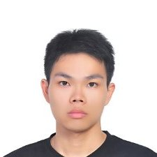

我擅長 Python 程式語言, 目前在找一份純軟體研發工作.
我喜歡針對問題尋求適當的答案並建構逐步施作細節.
在交大負責系統維運的工作三年半後, 我認為我欠缺軟體開發實務經驗, 因此想找一份專職軟體開發的工作.
- 專業技能
- 主力語言: Python
- 其他語言: Bourne shell script, PHP, Javascript, C, HTML, Haskell
- 網站框架: Django
- 作業系統: FreeBSD, Ubuntu
- 虛擬平台: VMVMware vSphere
- 版本控制: Git, Mercurial
- 資料庫: MySQL, phpMyAdmin
- 其他證照: ISO 27001/20000 Auditor
- 學歷
- 政治大學應用數學系畢.
- 交通大學資訊工程所 (休學中).
- 經歷
-
於交通大學任職2010~2013
- 維運 Email 服務, 虛擬主機服務 (VPS), 和工作站伺服器.
- 寫程式蒐集資料並分析 Email 使用者行為.
- 使用者的問題疑難排解.
- 將實體主機系統虛擬化.
- 轉換 Solaris 10 的系統到 FreeBSD 9.X .
- 以 Python 撰寫公告信發送系統.
- 改進 Email 服務及工作站伺服器.
Open Source 專案 2013~2014
社群活動2009~2014
- 人格特質
- 生活單純, 無太多追求
- 工作時在乎團隊合作重於個人利弊
- 對新科技產品無強烈的購買欲望
- 相較於新潮技術, 更喜歡穩定而有幫助的技術
- 工作目標
-
我想專心于一項有用的專案. 我想避免隨時都有可能被打斷的工作環境.
我很在乎團隊合作的機會, 希望職場上能有許多技術交流與討論, 也增進自己的開發經驗.
- 自我期許
-
我還未完成碩士學業. 打算在一年內工作上手後, 再準備論文完成碩士學業.
工作之餘, 我打算參與社群活動與自由軟體專案, 藉此拓展人脈增進技術.